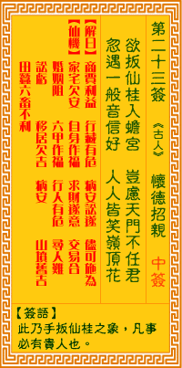

观音灵签第二十三签 【怀德招亲】 |
 | |||
欲攀仙桂蟾宫去 岂虑天门不开放 谋望一般音信好 高人自送岭头来 |
||||
| 【吉凶】 | 上中签 | 【宫位】 | 巳宫 | |
| 【签语】 | 此卦手扳仙桂之象，凡事必有贵人也。 | |||
| 【解曰】 | 商贾利益 行藏有危 病安讼遂 尽可施为 | |||
| 【仙机】 | 此签家宅欠安，自身作福，求财遂愿，交易合，婚姻阻，六甲作福，行人有危，田蚕六畜不利，寻人难，讼亏，移居欠吉，病安，山坟旧 吉。 | |||
| 【详解】 | 想要借由桂树爬上仙宫去，只怕天门不会就此为你开放;把所求的计划降低标准，自有高人送上山顶，指引通达的途径。 商贾利益，行藏无危，病安讼理，尽可施为。此签望仙扳桂之象，凡事必遇贵人。 本签为望仙扳桂之象。凡事必能遇赀人之象者。虽属上平。惟宜多作福。求神庇佑之。方有化凶趋吉之时。到头。君汝谋望一般喜讯好。高人。贵人也。日将佳音报之而来。要之。商贾者有利。行藏无危。病可安。讼可理。尽可施为。 此签有”抛砖引玉”之意。提醒当事人，施比受有福。在人与人的交往中，应主动而真诚的关心他人、了解他人的需要，在自己的能力范围之内，尽力帮忙协助、不求回报。所谓”助人为快乐之本”，成就别人，也就是成就自己。对于本身所拥有的事物，不须看得太重，应能懂得取舍，不要吝于付出。无须害怕失去，应知有舍才有得。精神上的快乐充盈，绝对大于物质上的享受。 | |||
| 【典故】 | 高怀德，北宋开国功臣，出生于大将家庭，有武勇。宋太主赵匡胤黄袍加身，登位做皇帝后，高怀德就和匡胤的妹妹燕国长公主结婚，加 驸马督尉，后和杨家将领兵征战大辽。 | |||